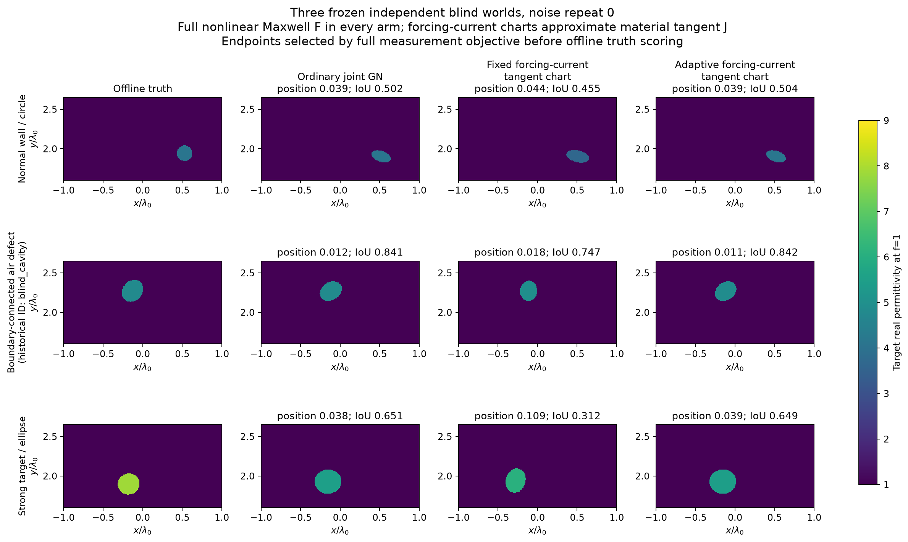
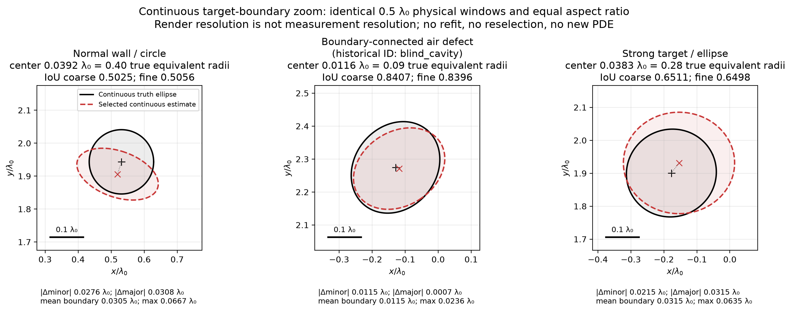
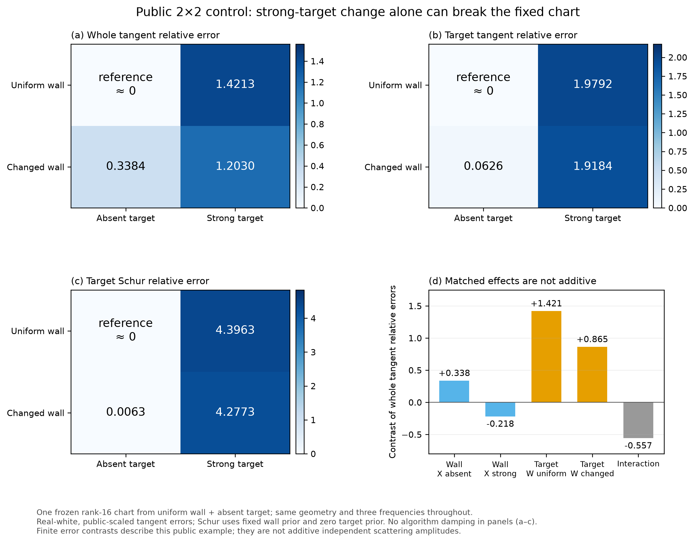
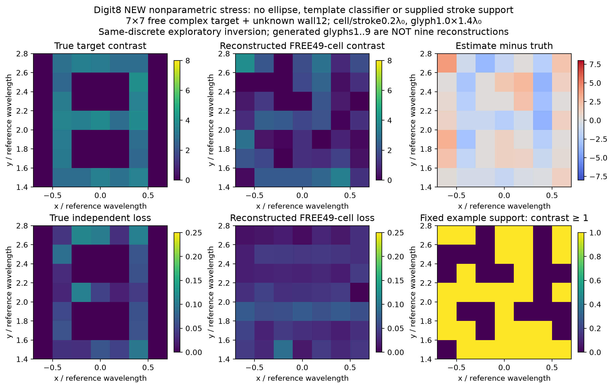

发布记录：2026-10-30，按用户“发布”请求公开。科研于2026-10-29 18:25 UTC封账；原报告中的“未发布/未授权”描述当时状态，原始裁决与归档不回写。发布没有新增物理计算。
墙体和目标都未知，
这次真正重建出了什么？
从复测量出发，连续估计墙体材料与目标位置、尺寸、方向及复材料，输出真实二维图像。普通联合 Full-GN 得到一个有效盲测样例；自适应 chart 的独立优势尚未成立。
完整中文报告 → 推导公式集 → 193 MB完整代码和数据 →
真实未知量，真实图像
在线只读取测量与公开配置。六个墙宏格的实介电率、损耗和七个连续目标参数共同优化；多起点按测量目标函数与冻结先验选支。三个独立parent全部展示；重复方法和噪声不算新世界。一个连外边界空气缺块世界的位置误差0.01160λ₀、IoU 0.84069、实ε相对误差0.00656，但目标损耗仍不准。

不只看IoU：看尺度、边界和材料
normal目标偏心且压扁，strong目标放大且偏移。将评价网格从401×301细化至1601×1201，IoU变化不足0.0032，不能用图像像素解释形状失败。物理网格细化另行报告；两例真值的细网格变化超过旧W的0.1白化门，未追认旧资格通过。

固定chart为何失效？新算法是否更好？
仅改变墙体时，目标Schur相对误差约0.00630；墙体不变而插入强目标后升至4.396。参考载荷子空间遗漏的材料切向不仅来自墙变化，也来自目标局部场与完整反馈。这个例子不否定原生SOM/TSOM。adaptive恢复部分固定chart质量，却用约1.47倍RHS、1.50倍墙钟，没有胜过普通Full-GN。

更复杂的数字8：拟合数据仍不能保证看清物体
7×7目标复材料格与未知墙共110变量，不使用数字模板或真实笔画支撑。白化测量RMS 0.9801，复contrast相对误差0.7793；两孔未恢复，两个起点均达到迭代上限。1–9中只对8执行了物理反演，其余仅有预定义图样。clean均值距离8.94，不能写成d≤1物理歧义证明。

复现与科学边界
可移动主入口已实际执行一次独立测量重建；全新依赖安装未运行。完整ZIP含7552项，保留原始复响应、分支、材料数组、失败和账本。数字8未来独立部署封装尚未完成，不冒充与主入口相同的复现状态。A17X已有理论、标准Schur/SOM/TSOM/ROM明确归属，论文级新算法增量未成立。
总预约12,440 FE / 187,732 complex RHS；两个早期CPU/RSS记录缺失。物理已封账，发布不增加求解。